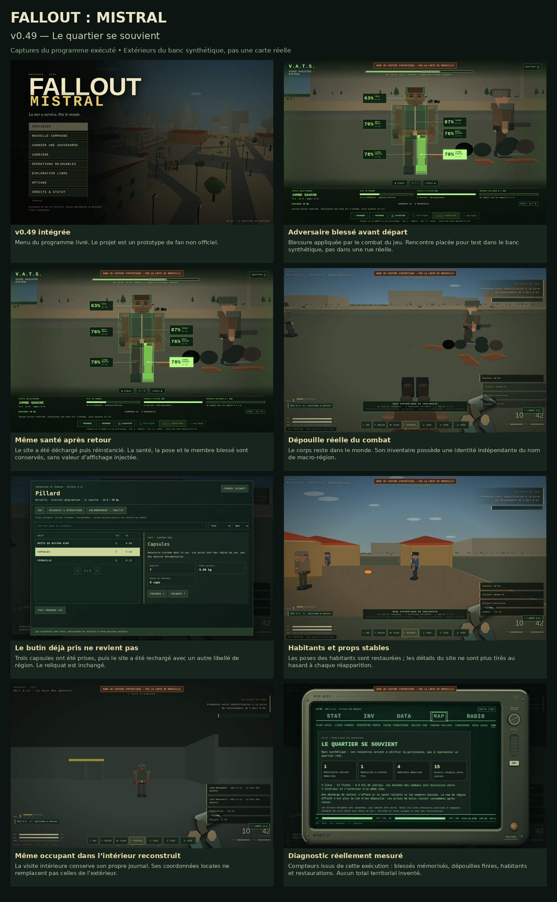
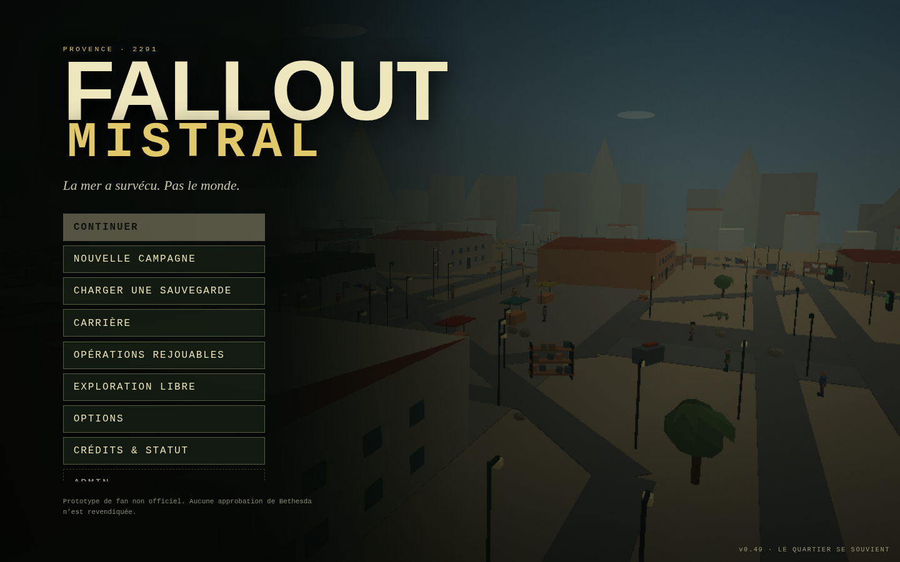
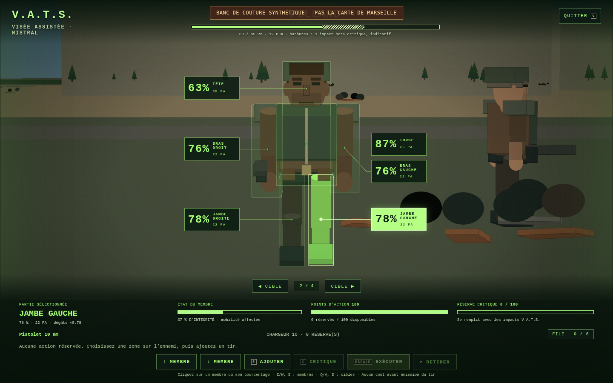
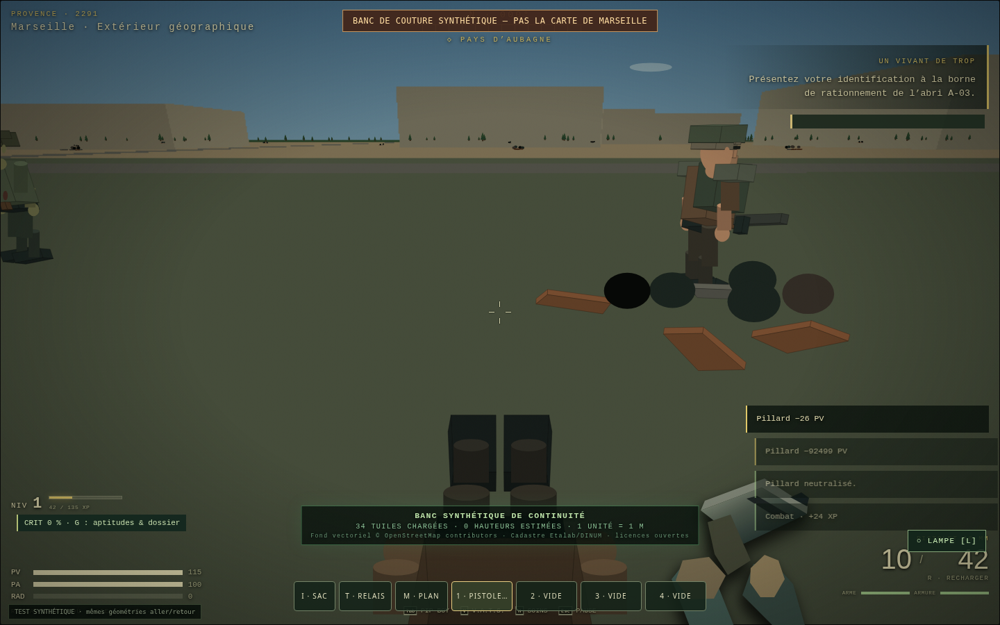
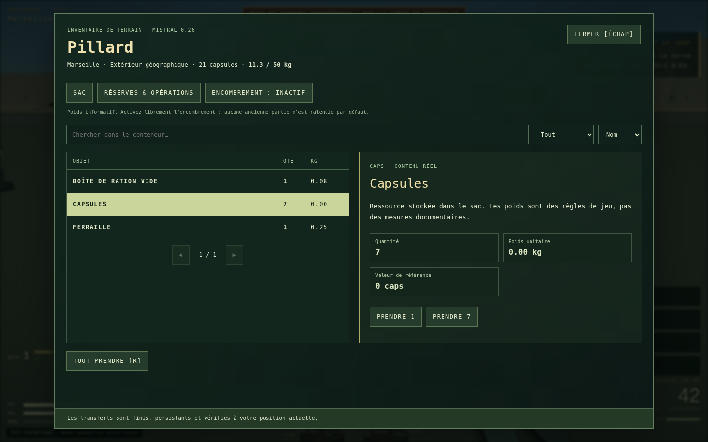
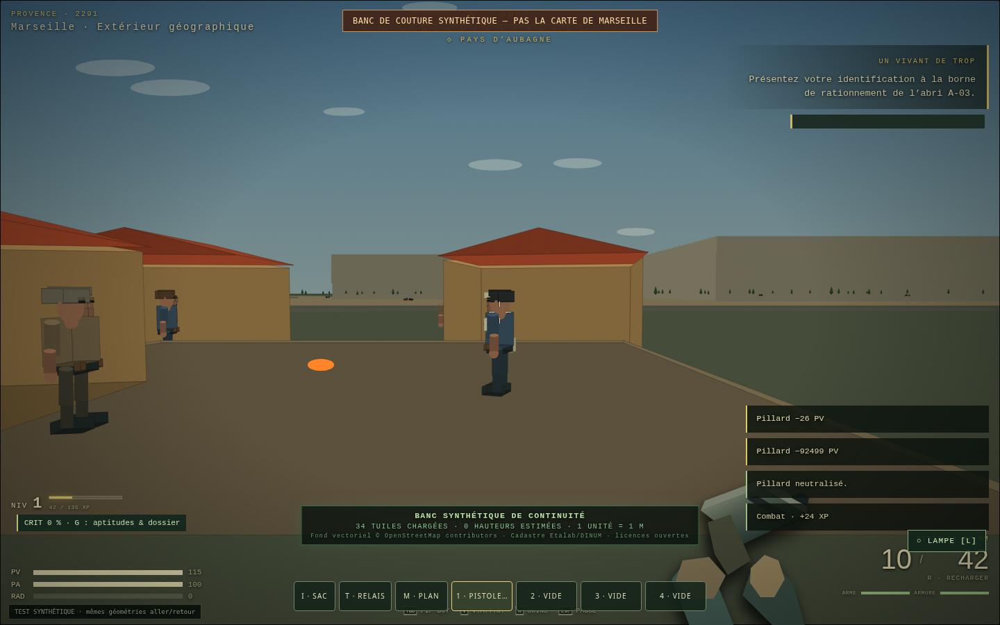
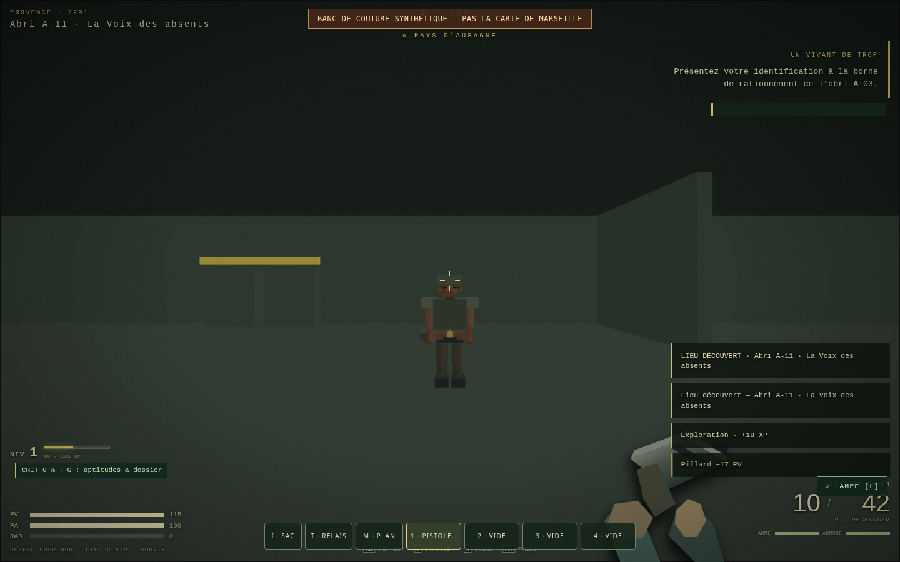
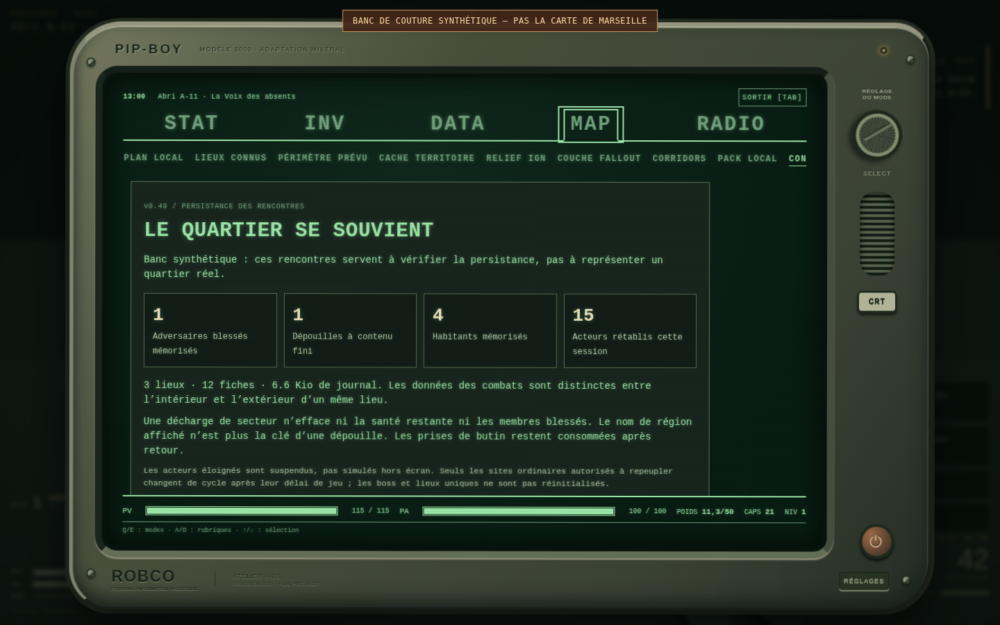

FALLOUT : MISTRAL / RAPPORT DE BUILD
v0.49 — Le quartier se souvient
Captures du programme réellement exécuté. Les extérieurs sont le banc synthétique signalé à l’écran, pas la cartographie réelle de Marseille.
Avant/après : même santé, même position et mêmes blessures. Les dégâts et le reliquat de butin passent par les fonctions du jeu ; seuls les placements et caméras sont préparés pour la vérification.


v0.49 intégrée
Menu du programme livré. Le projet est un prototype de fan non officiel.
Adversaire blessé avant départ
Blessure appliquée par le combat du jeu. Rencontre placée pour test dans le banc synthétique, pas dans une rue réelle.

Même santé après retour
Le site a été déchargé puis réinstancié. La santé, la pose et le membre blessé sont conservés, sans valeur d’affichage injectée.

Dépouille réelle du combat
Le corps reste dans le monde. Son inventaire possède une identité indépendante du nom de macro-région.

Le butin déjà pris ne revient pas
Trois capsules ont été prises, puis le site a été rechargé avec un autre libellé de région. Le reliquat est inchangé.

Habitants et props stables
Les poses des habitants sont restaurées ; les détails du site ne sont plus tirés au hasard à chaque réapparition.

Même occupant dans l’intérieur reconstruit
La visite intérieure conserve son propre journal. Ses coordonnées locales ne remplacent pas celles de l’extérieur.

Diagnostic réellement mesuré
Compteurs issus de cette exécution : blessés mémorisés, dépouilles finies, habitants et restaurations. Aucun total territorial inventé.
Preuves numériques : captures et comparaisons · 434 contrôles · état des fichiers géographiques.